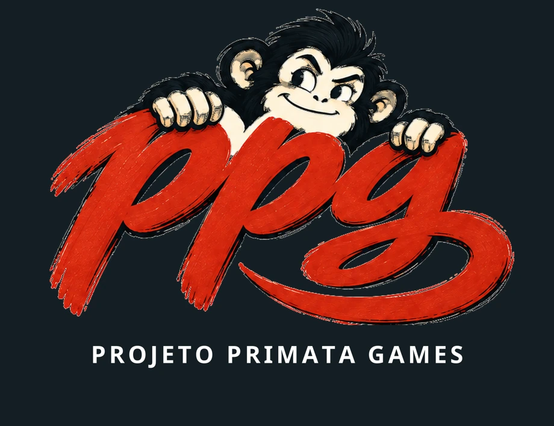
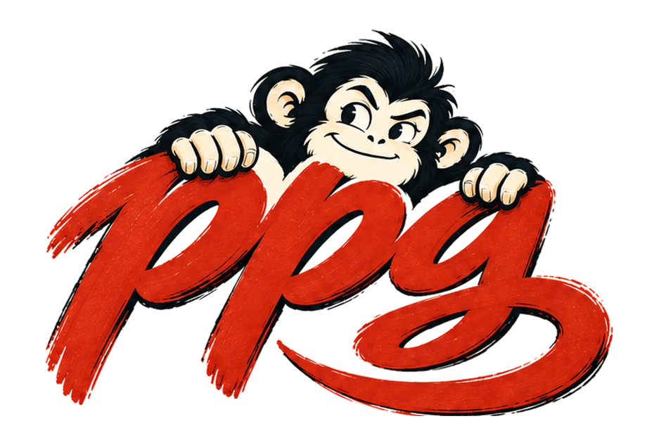

Ideias inquietas.
Jogos com
personalidade.
Um laboratório de diversão improvável: fliperama, estratégia, caos controlado e experimentos que fugiram da jaula.
IDEIAS TORTAS ★

Escolha seu caos.
Alguns favoritos para começar. Sim, clicar é permitido.
A jaula está aberta.
Os jogos continuam hospedados no GitHub Pages; aqui você joga sem sair do portal.
Tente outro termo ou limpe os filtros.
CAPITAL
CRIMINAL.
Comece endividado. Negocie entre 12 cidades. Leia o mercado, cuide dos riscos e construa seu império antes que o prazo acabe.
Uma simulação econômica de estratégia retrô na qual cada negócio pode enriquecer você — ou dar muito errado. Campanhas de 30, 90 e 365 dias. Estética vintage. Decisões com consequências.

Um estúdio pequeno.
Ideias enormes.
Projeto Primata Games é um laboratório independente de experiências interativas. A ideia é simples: misturar nostalgia de arcade, curiosidade técnica e aquele impulso de testar coisas que provavelmente não deveriam funcionar — até funcionarem.
De jogos rápidos de navegador a sistemas de estratégia mais profundos. Sem fórmula de franquia. Com bastante espaço para o inesperado.
COMECE PELO PRIMEIRO JOGO
CURIOSIDADE É NOSSOSUPERPODER. ✳